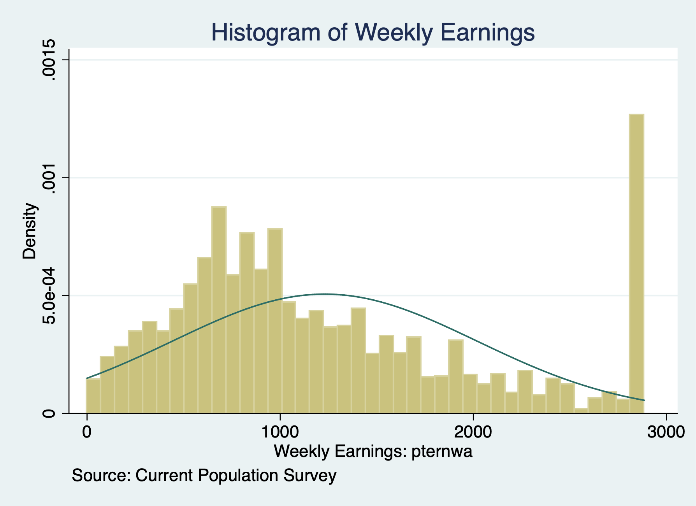
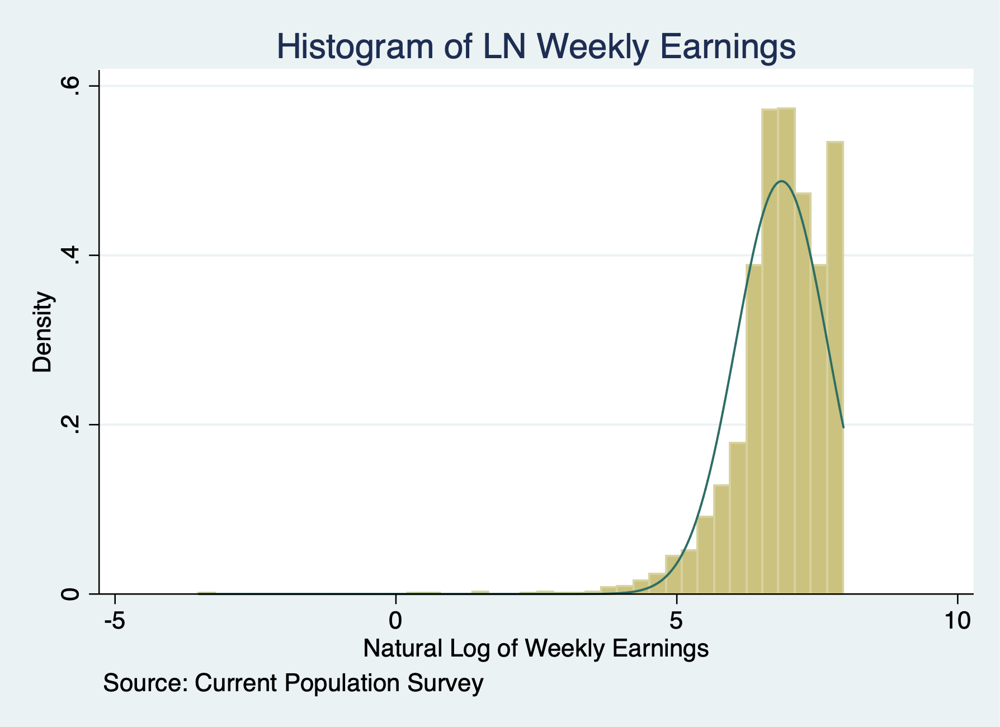

Chapter 1 Censored Models
1.1 Censored Regression Model - Right-Censoring
Lesson: We can use a Tobit estimator for right-censored model
We need to summarize the dependent variable to see the right-censored value. We know that weekly earnings in the Current Population Survey are top-coded or right-censored at $2884.61. This may bias our estimate, so we’ll compare a OLS model and a Tobit model for right-censored data. Remember a Tobit estimator for a censored model is different from a corner solution.
use "/Users/Sam/Desktop/Econ 645/Data/CPS/jan2024.dta", clear
sum earnings if prerelg==1, detail
histogram earnings if prerelg==1, normal title(Histogram of Weekly Earnings) caption("Source: Current Population Survey")
graph export "/Users/Sam/Desktop/Econ 645/R Markdown/week9_histogram_earnings.png", replace Weekly Earnings: pternwa
-------------------------------------------------------------
Percentiles Smallest
1% 70 0
5% 225 0
10% 360 0 Obs 10,666
25% 656 0 Sum of Wgt. 10,666
50% 1000 Mean 1230.474
Largest Std. Dev. 788.1457
75% 1680 2884.61
90% 2692.3 2884.61 Variance 621173.7
95% 2884.61 2884.61 Skewness .7779644
99% 2884.61 2884.61 Kurtosis 2.648218
(bin=40, start=0, width=72.11525)
(file /Users/Sam/Desktop/Econ 645/R Markdown/week9_histogram_earnings.png written in PNG format)
Let us take a look at the natural log of earnings
use "/Users/Sam/Desktop/Econ 645/Data/CPS/jan2024.dta", clear
sum lnearnings, detail
histogram lnearnings if prerelg==1, normal title(Histogram of LN Weekly Earnings) caption("Source: Current Population Survey")
graph export "/Users/Sam/Desktop/Econ 645/R Markdown/week9_histogram_lnearnings.png", replace Natural Log of Weekly Earnings
-------------------------------------------------------------
Percentiles Smallest
1% 4.356709 -3.506558
5% 5.420535 -3.506558
10% 5.886104 -3.506558 Obs 10,652
25% 6.49224 .48858 Sum of Wgt. 10,652
50% 6.907755 Mean 6.86502
Largest Std. Dev. .8181897
75% 7.426549 7.967145
90% 7.898151 7.967145 Variance .6694343
95% 7.967145 7.967145 Skewness -1.791008
99% 7.967145 7.967145 Kurtosis 13.92768
(bin=40, start=-3.5065579, width=.28684257)
(file /Users/Sam/Desktop/Econ 645/R Markdown/week9_histogram_lnearnings.png written in PNG format)
We’ll estimate the following Mincer Equation. \[ ln(wwages_{i})=\beta_{0} + \beta_{1} edu_{i} + \beta_{2} exp + \beta_{3} exp^2 \beta_{4} marital_{i} + \beta_{5} veteran_{i} + \beta_{6} union_{i} + \beta_{7} female_{i} + \beta_{8} race_{i} + u_{i} \] We’ll need to use the option, ul(right-censored-value) with our Tobit estimator.est clear
eststo OLS: quietly reg lnearnings i.edu exp expsq i.marital i.veteran i.union i.female i.race
eststo Tobit: quietly tobit lnearnings i.edu exp expsq i.marital i.veteran i.union i.female i.race, ul(`maxval')
esttab OLS Tobit, drop(0.* 1.race* 1.mar* 1.edu) mtitle("OLS" "Tobit") Natural Log of Weekly Earnings
-------------------------------------------------------------
Percentiles Smallest
1% 4.356709 -3.506558
5% 5.420535 -3.506558
10% 5.886104 -3.506558 Obs 10,652
25% 6.49224 .48858 Sum of Wgt. 10,652
50% 6.907755 Mean 6.86502
Largest Std. Dev. .8181897
75% 7.426549 7.967145
90% 7.898151 7.967145 Variance .6694343
95% 7.967145 7.967145 Skewness -1.791008
99% 7.967145 7.967145 Kurtosis 13.92768
scalars:
r(N) = 10652
r(sum_w) = 10652
r(mean) = 6.865020483352663
r(Var) = .6694343494891623
r(sd) = .8181896781854207
r(skewness) = -1.791007993978133
r(kurtosis) = 13.92768307319675
r(sum) = 73126.19818867257
r(min) = -3.506557897319982
r(max) = 7.967144987828557
r(p1) = 4.356708826689592
r(p5) = 5.420534999272286
r(p10) = 5.886104031450156
r(p25) = 6.492239835020471
r(p50) = 6.907755278982137
r(p75) = 7.426549072397305
r(p90) = 7.898151125863075
r(p95) = 7.967144987828557
r(p99) = 7.967144987828557
--------------------------------------------
(1) (2)
OLS Tobit
--------------------------------------------
main
2.edu 0.330*** 0.330***
(11.77) (11.04)
3.edu 0.442*** 0.445***
(13.48) (12.67)
4.edu 0.788*** 0.832***
(26.50) (26.11)
5.edu 0.951*** 1.046***
(30.01) (30.64)
exp 0.0558*** 0.0575***
(28.73) (27.60)
expsq -0.000887*** -0.000911***
(-28.27) (-27.03)
2.marital -0.0389 -0.0462*
(-1.92) (-2.12)
3.marital -0.118*** -0.130***
(-6.66) (-6.84)
1.veteran 0.0412 0.0428
(1.34) (1.28)
1.union 0.0670** 0.0448
(3.05) (1.90)
1.female -0.304*** -0.335***
(-22.81) (-23.25)
2.race_eth~y 0.0325 0.0551
(0.41) (0.65)
3.race_eth~y -0.0466 -0.0576
(-0.60) (-0.69)
4.race_eth~y 0.135 0.131
(1.05) (0.96)
5.race_eth~y 0.0232 0.0167
(0.30) (0.20)
6.race_eth~y 0.0730 0.0903
(0.82) (0.95)
7.race_eth~y 0.0549 0.0553
(0.73) (0.69)
_cons 5.813*** 5.817***
(69.47) (64.82)
--------------------------------------------
sigma
_cons 0.714***
(137.00)
--------------------------------------------
N 10568 10568
--------------------------------------------
t statistics in parentheses
* p<0.05, ** p<0.01, *** p<0.001Interpretation A very similar interpretation to OLS, but we need normality and homoskedasticity for unbiased estimator. We can use a log-linear interpretation without a scaling factor, so the returns to education would only require \((e^\beta -1)*100\) interpretation.
1.2 Censored Regression Model - Duration analysis
Lesson: We can look at a censored data for duration analysis similar to Wooldridge’s example.
This differs from a top-coded data, which we can use a Tobit analysis that we just saw.
We can look at the duration of time in months between an arrests for inmates in a North Carolina prison after being released from prison. We want to evaluate a work program to see if it is effective in increasing duration before recidivism occurs.
Note: 893 inmates have not been arrested during the period they were followed These observations are censored. The censoring times differed among inmates ranging from 70 to 81 months.
Our dependent variable duration (time in months) is transformed by natural logarithm. We have a bunch of observations that recidivate between 70 and 81 months.
We have a bunch of observations that are censored after 69 months (but not all)
| cens
durat | 0 1 | Total
-----------+----------------------+----------
1 | 8 0 | 8
2 | 15 0 | 15
3 | 14 0 | 14
4 | 13 0 | 13
5 | 16 0 | 16
6 | 18 0 | 18
7 | 18 0 | 18
8 | 16 0 | 16
9 | 18 0 | 18
10 | 22 0 | 22
11 | 11 0 | 11
12 | 14 0 | 14
13 | 15 0 | 15
14 | 16 0 | 16
15 | 23 0 | 23
16 | 11 0 | 11
17 | 9 0 | 9
18 | 16 0 | 16
19 | 9 0 | 9
20 | 8 0 | 8
21 | 13 0 | 13
22 | 7 0 | 7
23 | 16 0 | 16
24 | 12 0 | 12
25 | 13 0 | 13
26 | 8 0 | 8
27 | 11 0 | 11
28 | 9 0 | 9
29 | 8 0 | 8
30 | 7 0 | 7
31 | 6 0 | 6
32 | 6 0 | 6
33 | 6 0 | 6
34 | 4 0 | 4
35 | 5 0 | 5
36 | 6 0 | 6
37 | 6 0 | 6
38 | 4 0 | 4
39 | 4 0 | 4
40 | 2 0 | 2
41 | 7 0 | 7
42 | 5 0 | 5
43 | 5 0 | 5
44 | 4 0 | 4
45 | 4 0 | 4
46 | 7 0 | 7
47 | 4 0 | 4
48 | 1 0 | 1
49 | 4 0 | 4
50 | 5 0 | 5
51 | 2 0 | 2
52 | 2 0 | 2
53 | 8 0 | 8
54 | 3 0 | 3
55 | 5 0 | 5
56 | 2 0 | 2
57 | 4 0 | 4
58 | 1 0 | 1
59 | 5 0 | 5
60 | 3 0 | 3
62 | 3 0 | 3
63 | 2 0 | 2
64 | 1 0 | 1
65 | 2 0 | 2
66 | 3 0 | 3
67 | 3 0 | 3
68 | 4 0 | 4
69 | 2 0 | 2
70 | 2 103 | 105
71 | 2 88 | 90
72 | 1 84 | 85
73 | 1 107 | 108
74 | 1 71 | 72
75 | 0 44 | 44
76 | 0 105 | 105
77 | 1 60 | 61
78 | 0 54 | 54
79 | 0 60 | 60
80 | 0 69 | 69
81 | 0 48 | 48
-----------+----------------------+----------
Total | 552 893 | 1,445 We’ll use the stset command and set failure at cens==0. We’ll use the stset command to time set survival.
failure event: cens == 0
obs. time interval: (0, ldurat]
exit on or before: failure
------------------------------------------------------------------------------
1445 total observations
8 observations end on or before enter()
------------------------------------------------------------------------------
1437 observations remaining, representing
544 failures in single-record/single-failure data
5411.742 total analysis time at risk and under observation
at risk from t = 0
earliest observed entry t = 0
last observed exit t = 4.394449We’ll use the streg command and set the distribution
\[ ldurat_i = \alpha + =\delta workprg_i + \beta_2 tserved_i + \beta_3 felon_i + \beta_4 alcohol_i + \beta_5 drugs_i + \beta_6 educ_i + x'_i \gamma + \varepsilon_i\] Where \(x'\) are demographics of race, marital status, and age.
failure event: cens == 0
obs. time interval: (0, ldurat]
exit on or before: failure
------------------------------------------------------------------------------
1445 total observations
8 observations end on or before enter()
------------------------------------------------------------------------------
1437 observations remaining, representing
544 failures in single-record/single-failure data
5411.742 total analysis time at risk and under observation
at risk from t = 0
earliest observed entry t = 0
last observed exit t = 4.394449
failure _d: cens == 0
analysis time _t: ldurat
Fitting constant-only model:
Iteration 0: log likelihood = -1254.5107
Iteration 1: log likelihood = -1100.1536
Iteration 2: log likelihood = -1079.1128
Iteration 3: log likelihood = -1078.7957
Iteration 4: log likelihood = -1078.7957
Fitting full model:
Iteration 0: log likelihood = -1078.7957
Iteration 1: log likelihood = -1034.1821
Iteration 2: log likelihood = -1001.9186
Iteration 3: log likelihood = -1000.5996
Iteration 4: log likelihood = -1000.5919
Iteration 5: log likelihood = -1000.5919
Weibull regression -- log relative-hazard form
No. of subjects = 1,437 Number of obs = 1,437
No. of failures = 544
Time at risk = 5411.742317
LR chi2(10) = 156.41
Log likelihood = -1000.5919 Prob > chi2 = 0.0000
------------------------------------------------------------------------------
_t | Coef. Std. Err. z P>|z| [95% Conf. Interval]
-------------+----------------------------------------------------------------
workprg | .0780722 .091463 0.85 0.393 -.1011921 .2573364
priors | .0834203 .0139155 5.99 0.000 .0561465 .1106941
tserved | .0134545 .0016851 7.98 0.000 .0101519 .0167572
felon | -.287139 .106697 -2.69 0.007 -.4962614 -.0780167
alcohol | .4399456 .10658 4.13 0.000 .2310527 .6488385
drugs | .2920932 .0983695 2.97 0.003 .0992926 .4848938
black | .4515388 .0889883 5.07 0.000 .2771249 .6259527
married | -.146192 .1098131 -1.33 0.183 -.3614216 .0690377
educ | -.023948 .019578 -1.22 0.221 -.0623202 .0144241
age | -.0036431 .0005284 -6.89 0.000 -.0046788 -.0026073
_cons | -3.639277 .3077568 -11.83 0.000 -4.24247 -3.036085
-------------+----------------------------------------------------------------
/ln_p | .9214587 .0396737 23.23 0.000 .8436997 .9992178
-------------+----------------------------------------------------------------
p | 2.512953 .0996982 2.324953 2.716156
1/p | .3979381 .0157877 .3681673 .4301163
------------------------------------------------------------------------------Interpretation: Given the log-linear function form, we can easily determine the estimated percent change in duration before criminal recidivism.
8.1200719Being a part of the work program increase the duration of time before recidivism, but it is not statistically significant.
-24.959259Being a felon reduces the duration of time before recidivism, where a felon has as 24% decrease in duration of time before recidivism.